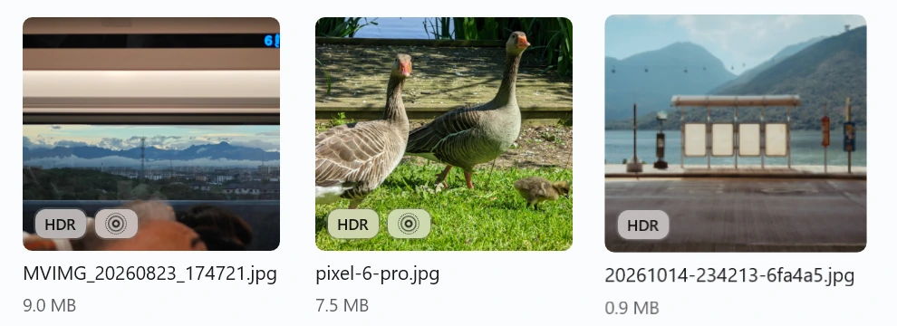
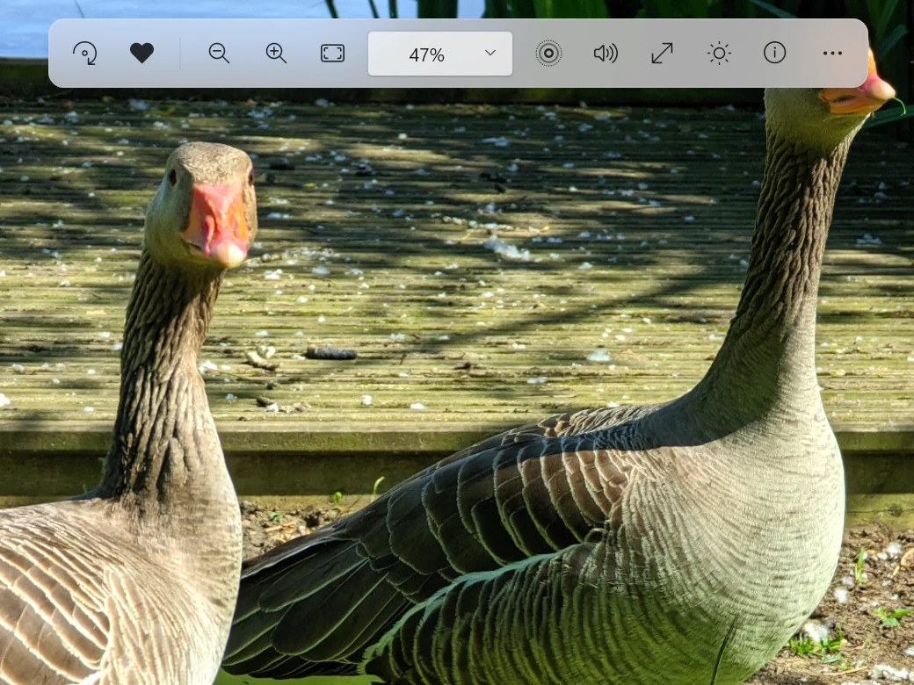

Windows 11 · 免费 · 开源
让普通照片，
也有 HDR 的光影。
Luma 是一款 Windows 原生照片查看器。原生 HDR 照片直接点亮；普通照片，甚至实况照片，也能借助 NVIDIA RTX Video HDR 增强光影。
· Windows 11 x64 · RTX HDR 与 VSR 需要兼容的 NVIDIA RTX 显卡
Windows 实机界面展示。在开启 HDR 的屏幕上用 Chrome 或 Edge 打开，可拖动对比 HDR 效果。
如果你有一块好 HDR 屏幕，别只用它看电影。
也用它，重新看看自己的照片。
亮点
原生 HDR，直接点亮。
带 HDR 信息的照片自动以 HDR 显示，不需要 RTX。图库角标，一眼看出照片的特性。
- Ultra HDR JPEG
- iPhone HEIC
- JPEG XR

普通照片，也能 HDR。
借助官方 NVIDIA RTX Video HDR，为普通照片增强光影。
- RTX HDR在顶部“显示增强”中开启
- HDR 风格柔和、自然、鲜明，默认自然
- VSR 超分辨率独立开关，默认关闭
- 实况照片动态部分也能用 RTX HDR 预览
- 按住 空格对比原图或可用的 SDR 底图
拍摄细节，随手查看。
日期、相机、镜头、曝光、HDR 来源与实况信息，支持搜索和复制 EXIF。
照片特性
HDRJPG
实况照片
Android Motion Photo
内嵌视频 · 2.42 MiB · 2,535,338 字节
日期与时间
拍摄：2024年6月2日 15:47:34
设备与拍摄
Google · Pixel 6 Pro
Google · Pixel 6 Pro back camera 19.0mm f/3.5
19 mm · f/3.5 · 1/371 秒 · ISO 29
色彩与显示
原生 HDR · JPEG 增益图
EXIF 色彩空间：sRGB
相册，顺着你的习惯。
导入文件夹即可浏览，支持搜索、收藏与最近打开。照片留在原位置，移除相册不会删除原文件。
实况照片
让回忆动起来。
动态部分，也能用 RTX HDR 预览。
点击顶部的同心圆图标，或按 L，回放按下快门前后的声音与动作。按住 空格 随时对比。
使用说明与验证范围

点这里，试试实况回放
LIVE · RTX HDR 已生效
-
1
开启系统 HDR
在 Windows“设置 → 系统 → 显示”中选中屏幕，打开“使用 HDR”。
-
2
检查屏幕校准
用微软的 Windows HDR Calibration 按测试图案校准并保存配置。
-
3
打开自己的照片
原生 HDR 照片自动识别。普通照片，在顶部“显示增强”里开启 RTX HDR。
HDR 屏幕准备指南
下载 Luma
免费、开源。适用于 Windows 11 x64。
更新说明
全部版本
自行构建
- 已安装旧版？退出 Luma 后直接运行新版安装器即可升级，图库和设置保留。
- 当前安装包未做代码签名，可用 Release 中的 SHA256SUMS.txt 校验下载。微软商店版准备中。